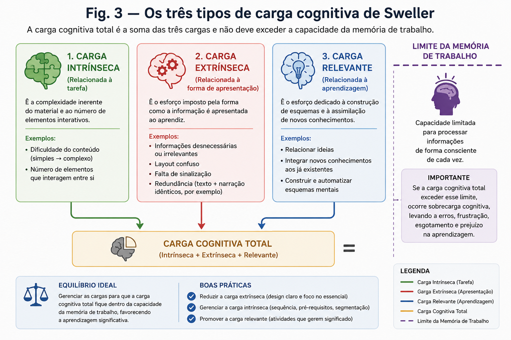
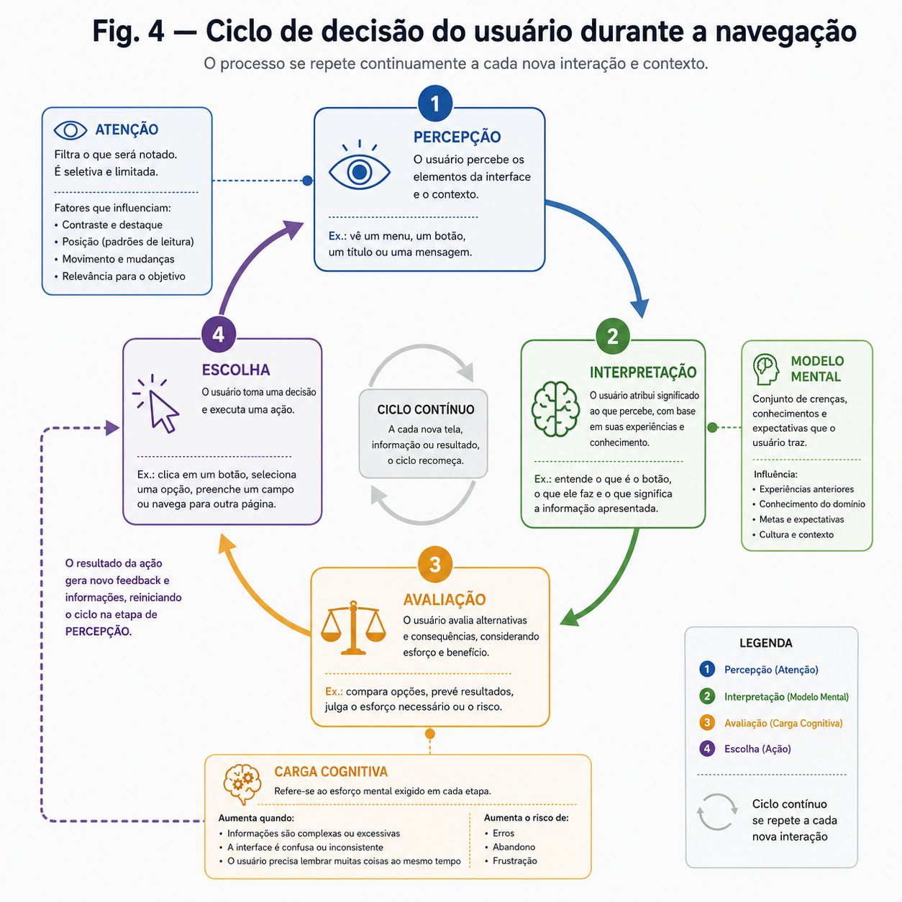

Decisão, modelos mentais e carga cognitiva
Como a percepção visual, a atenção e a carga cognitiva moldam a forma como as pessoas navegam e interpretam rótulos — e por que isso importa para quem projeta interfaces.
Principais pontos
- A percepção visual organiza estímulos usando princípios da Gestalt e atributos pré-atentivos.
- A atenção é limitada e seletiva: só uma parte do que está na tela é realmente processada.
- A carga cognitiva mede o esforço mental exigido — e a extrínseca deve ser reduzida pelo design.
- Modelos mentais moldam como rótulos e menus são interpretados antes mesmo de qualquer clique.
- Toda decisão de navegação segue um ciclo: perceber, interpretar, avaliar opções e escolher.
00Introdução
Antes de clicar em qualquer botão, o cérebro do usuário já fez um trabalho enorme: enxergou formas e cores, decidiu para onde olhar primeiro e comparou o que viu com aquilo que já esperava encontrar. Esses três processos — percepção visual, atenção e carga cognitiva — são fatores humanos centrais em Interação Humano-Computador (IHC), porque determinam se uma pessoa vai entender rapidamente uma tela ou vai se perder nela.
Neste tópico vamos entender cada um desses processos separadamente e depois juntá-los em algo muito prático: como eles influenciam a tomada de decisão e a formação de modelos mentais quando alguém navega em um sistema ou tenta entender o significado de um rótulo (o nome de um menu, de um botão, de uma categoria).
Um design pode estar "correto" tecnicamente e ainda assim falhar, se ele exigir do usuário mais atenção ou mais esforço mental do que ele está disposto — ou consegue — dar. Entender fatores humanos é entender os limites (e os atalhos) da mente humana para projetar dentro deles.
01Percepção visual
Percepção visual é o processo pelo qual o cérebro organiza e interpreta os estímulos captados pelos olhos, transformando pontos de luz e cor em formas, objetos e significados reconhecíveis. Isso não acontece de forma neutra: o cérebro segue padrões previsíveis para agrupar e priorizar informações, e é justamente esses padrões que o design de interfaces pode aproveitar — ou ignorar, gerando confusão.
Os princípios da Gestalt
A psicologia da Gestalt descreve regras que o cérebro usa, quase automaticamente, para organizar elementos visuais em grupos e totalidades. Os mais relevantes para navegação e rotulagem são:
- Proximidade — elementos próximos entre si são percebidos como relacionados. É por isso que itens de um mesmo menu devem ficar visualmente agrupados e separados de outros grupos por espaço em branco.
- Similaridade — elementos com aparência parecida (cor, forma, tamanho) são percebidos como pertencentes à mesma categoria. Botões da mesma função devem ter o mesmo estilo visual em todo o sistema.
- Continuidade — o olho tende a seguir linhas e alinhamentos. Uma lista de opções alinhada verticalmente é lida como uma sequência única.
- Fechamento (closure) — o cérebro completa formas incompletas. Ícones simplificados funcionam porque a mente "preenche" os detalhes que faltam.
- Figura-fundo — distinguimos automaticamente o que é o "objeto principal" (figura) do que é "pano de fundo". Um bom contraste entre o conteúdo principal e o plano de fundo evita que o usuário confunda o que é clicável com o que é apenas decoração.
Atributos pré-atentivos
Existem características visuais que o cérebro processa em frações de segundo, antes mesmo de qualquer atenção consciente ser direcionada a elas: cor, tamanho, orientação, forma e posição. Esses são os atributos pré-atentivos. Um botão vermelho em uma tela predominantemente cinza é notado quase instantaneamente, sem esforço — é isso que torna cores e tamanhos ferramentas poderosas (e perigosas, se usadas em excesso) para criar hierarquia visual.
Em um sistema de rotulagem de produtos, destacar apenas o rótulo "Esgotado" com uma cor de alto contraste (usando um atributo pré-atentivo) permite que o usuário identifique produtos indisponíveis sem precisar ler cada item da lista.
Hierarquia visual
A combinação desses princípios permite construir uma hierarquia visual: uma ordem sugerida de leitura, do mais para o menos importante, feita por meio de tamanho, peso da fonte, cor, contraste e posicionamento. Uma boa hierarquia visual guia o olho do usuário pelo caminho que o design pretende, reduzindo a necessidade de "procurar" informação.
02Atenção
Enquanto a percepção organiza o que os olhos captam, a atenção decide o que, dentro desse campo visual, será efetivamente processado com mais profundidade. A atenção humana é um recurso limitado: não conseguimos prestar atenção plena em tudo ao mesmo tempo, então o cérebro seleciona.
Atenção seletiva e o "gargalo" atencional
A atenção seletiva é a capacidade de focar em um estímulo específico enquanto se ignoram outros presentes no mesmo campo visual. Isso cria um efeito de "gargalo": mesmo que uma tela tenha dez informações visíveis, o usuário provavelmente vai processar ativamente apenas duas ou três. As demais existem, mas são "vistas sem ser vistas".
Cegueira à mudança (change blindness) e cegueira a banners (banner blindness) são efeitos práticos desse gargalo: alterações na tela, ou elementos que "parecem" propaganda ou aviso genérico, podem passar completamente despercebidos — inclusive avisos importantes de erro, se forem posicionados como um banner comum.
Padrões de leitura em tela
Estudos de rastreamento ocular (eye-tracking) mostram que, ao escanear uma página, os olhos tendem a seguir padrões característicos:
- Padrão em F — comum em páginas com texto denso: o usuário lê a primeira linha inteira, depois escaneia a lateral esquerda, lendo cada vez menos das linhas seguintes.
- Padrão em Z — comum em páginas com pouco texto e elementos bem distribuídos: o olhar percorre do canto superior esquerdo ao direito, desce até o canto inferior esquerdo e termina no inferior direito.
Saber qual padrão se aplica a uma tela ajuda a decidir onde posicionar rótulos essenciais, como o nome de uma categoria ou uma chamada para ação (call to action): normalmente nos pontos de maior concentração do olhar.
Lei de Hick e o custo da escolha
A Lei de Hick descreve algo bem intuitivo: quanto mais opções uma pessoa tem para escolher, mais tempo ela leva para decidir. Em termos de navegação, isso significa que menus muito extensos, ou rótulos ambíguos que obrigam o usuário a "pensar mais para escolher", aumentam o tempo — e o esforço — de decisão. Aqui a atenção já começa a se conectar diretamente com a tomada de decisão, tema que vamos aprofundar mais adiante.
03Carga cognitiva
Se a atenção decide o que será processado, a carga cognitiva descreve o quanto de esforço mental esse processamento exige — e qual a capacidade que temos disponível para isso. Ela está diretamente ligada à memória de trabalho: a "área de trabalho" temporária do cérebro, onde mantemos informações ativas enquanto raciocinamos.
A memória de trabalho é limitada. O psicólogo George Miller descreveu, em um estudo clássico de 1956, que conseguimos manter cerca de 7 (mais ou menos 2) itens simultaneamente em mente — número que pesquisas posteriores (como as de Nelson Cowan) sugerem ser ainda menor, próximo de 4 itens, quando os itens não podem ser agrupados.
Os três tipos de carga cognitiva (Sweller)
O pesquisador John Sweller propôs a Teoria da Carga Cognitiva, dividindo o esforço mental em três tipos:
Complexidade inerente à própria tarefa ou conteúdo — não pode ser eliminada, só gerenciada em etapas.
Esforço extra causado pela forma como a informação é apresentada — um mau design cria esse tipo de carga desnecessária.
Esforço investido na construção de entendimento e aprendizado — carga "boa", que ajuda a formar modelos mentais duradouros.
O objetivo do design de interação não é eliminar toda a carga cognitiva (a intrínseca é inevitável), mas sim reduzir a carga extrínseca — aquela gerada por rótulos confusos, layouts inconsistentes ou navegação imprevisível — para sobrar espaço mental para o que realmente importa: entender e decidir.
Estratégias práticas para reduzir carga extrínseca
- Chunking (agrupamento) — dividir informações em blocos menores e nomeados, em vez de listas longas e uniformes.
- Divulgação progressiva — mostrar primeiro apenas o essencial, revelando detalhes ou opções avançadas sob demanda.
- Consistência — manter os mesmos rótulos, ícones e posições ao longo de todo o sistema, para que o usuário não precise reaprender a cada tela.
- Rótulos claros e previsíveis — usar palavras que já fazem parte do vocabulário do usuário, em vez de termos técnicos ou internos do sistema.

04Modelos mentais e tomada de decisão
Agora que já vimos percepção, atenção e carga cognitiva de forma isolada, é hora de juntar as peças em algo muito concreto: como uma pessoa forma expectativas sobre um sistema e como ela decide o que fazer dentro dele.
O que é um modelo mental
Um modelo mental é a representação interna e simplificada que uma pessoa constrói sobre como algo funciona, com base em experiências anteriores. Ao ver um ícone de lupa, a maioria das pessoas já espera que ele leve a uma busca — esse é um modelo mental formado por repetição de uso em diversos sistemas ao longo do tempo.
Existe uma diferença entre o modelo mental do usuário (o que ele acha que vai acontecer) e o modelo conceitual do sistema (o que a equipe de design realmente construiu). Quanto maior essa distância, mais erros de navegação e mais decisões equivocadas o usuário vai cometer — mesmo que o sistema, tecnicamente, esteja "correto".
Como isso afeta rotulagem
Um rótulo (o nome de um menu, categoria ou botão) é, na prática, uma promessa: ele ativa um modelo mental sobre o que vai acontecer ao ser clicado. Se o rótulo usar linguagem interna da empresa ("Módulo de Gestão de Fluxos") em vez da linguagem do usuário ("Meus Pedidos"), o modelo mental correto não é ativado, e a pessoa hesita, erra o caminho ou simplesmente desiste.
Como isso afeta a navegação
A estrutura de navegação de um sistema — como os menus são organizados e agrupados — deve corresponder ao modelo mental que o usuário já traz de experiências anteriores (com outros sites, apps ou até com o mundo físico). Estruturas muito diferentes do esperado aumentam a carga cognitiva extrínseca e o tempo de decisão previsto pela Lei de Hick.
O processo de decisão, passo a passo
Quando um usuário navega, ele passa repetidamente por um pequeno ciclo de decisão:
- Percepção — o que está visível na tela? O que se destaca?
- Interpretação — o que esses elementos parecem significar, com base no meu modelo mental?
- Avaliação de opções — quais caminhos ou ações estão disponíveis, e qual parece levar ao meu objetivo?
- Escolha e ação — clico, seguindo a opção que exigiu menos esforço para ser entendida.
A atenção limita o que entra na etapa 1; a carga cognitiva determina quanto esforço a etapa 2 e 3 vão exigir; e o modelo mental prévio molda a interpretação na etapa 2. Quando qualquer uma dessas etapas exige esforço demais, o risco de abandono ou erro aumenta.
Checklist prática
- Os rótulos usam o vocabulário do usuário, não o vocabulário interno do sistema?
- Itens relacionados estão agrupados visualmente (proximidade e similaridade)?
- A informação mais importante está no caminho do olhar (padrão em F ou Z)?
- O número de opções em cada menu é administrável, sem exigir escolha excessiva?
- A navegação se comporta de forma consistente em todas as telas?

05Glossário rápido
| Termo | Definição resumida |
|---|---|
| Percepção visual | Processo de organizar e interpretar estímulos visuais captados pelos olhos. |
| Gestalt | Princípios sobre como o cérebro agrupa elementos visuais (proximidade, similaridade, continuidade, fechamento, figura-fundo). |
| Atributo pré-atentivo | Característica visual (cor, forma, tamanho) processada quase instantaneamente, sem esforço consciente. |
| Atenção seletiva | Capacidade de focar em um estímulo e ignorar outros no mesmo campo visual. |
| Lei de Hick | Quanto mais opções disponíveis, mais tempo é necessário para decidir. |
| Carga cognitiva | Quantidade de esforço mental exigido para processar uma informação ou tarefa. |
| Memória de trabalho | Capacidade limitada de manter informações ativas na mente durante o raciocínio. |
| Modelo mental | Representação interna e simplificada de como algo funciona, construída pela experiência. |
Palavras-chave
06Resumo em vídeo
Assista ao resumo em vídeo desta aula para revisar os principais pontos sobre percepção visual, atenção e carga cognitiva.
07Referências
- MILLER, G. A. The magical number seven, plus or minus two: some limits on our capacity for processing information. Psychological Review, 1956.
- SWELLER, J. Cognitive load during problem solving: effects on learning. Cognitive Science, 1988.
- NORMAN, D. A. O Design do Dia a Dia (The Design of Everyday Things).
- NIELSEN, J. Gestalt Principles for User Interface Design — Nielsen Norman Group.
- HICK, W. E. On the rate of gain of information. Quarterly Journal of Experimental Psychology, 1952.